Multi-user Agenda plugin
With this plugin you have the possibility the run multiple agenda in osFinancials.
You can have a agenda for each employee and create invoices directly from out his/hers agenda with a simple click.
Each agenda has it's own calendar and task list.
Introduction to Multi-user Agenda plugin
This plugin enhances multi-user agenda (multiple agendas) on the Calendar. You can add agendas and link them as default to the current user. For every agenda a tab will appear in the agenda in osFinancials so you can see what the other agenda's have for appointments. You may also create invoices for each of these all agendas.
You can have a agenda for each employee, salesperson, user, etc. and create invoices directly from his / her agenda with a simple click. Each agenda has it's own calendar and task list.
If you create users in the Setup → Access control menu, you may link each of these users to their own Agenda on the Access Control - Others tab.
There are ten (10) main categories of events which you can manage (add, edit, delete or change dates of events) for each users agenda. These are:

- Appointment (general - i.e. with bank manager, lunches, etc.)
- Repeating invoices - schedule when you need to copy / process repeating invoices.
- Debtors appointment - schedule any of the six (6) categories of appointments with debtors / customers for specials, accounts, etc.
- Creditors appointment - schedule appointments with creditors / suppliers for orders, accounts, etc.
- Hours - schedule the hours (time) to invoice debtors / customers. Once these are set you may generate Quotes for the hours. Once these Quotes are generated, you may edit them (if necessary) and convert them to Invoices.
An example of the Multi-user Agenda screen is as follows:
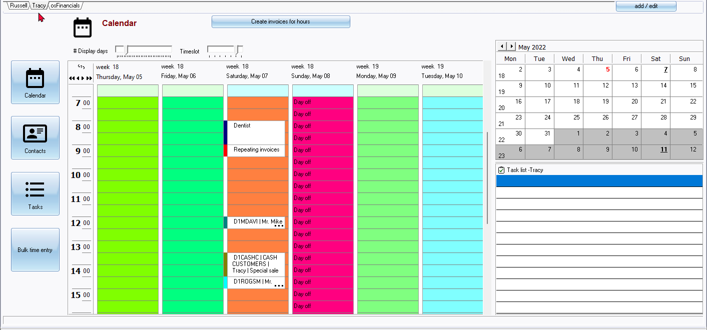
- User dates - Displays only for the selected user.
- General dates - Displays for all users.
- Appointments- Appointments (events) scheduled for this day
- Flexi-time - Time may be set different for each working day. You may also use colours to display the working hours for each different working day. For example, on Tuesdays, the user may work longer hours e.g. from 6:00 - 17:00 while working from 08:00 - 16:00 on other days.
- Tasks - Each user has its own task list. Once a task is completed, the user may tick the task as completed. The task will be displayed with a line through the text. Overdue (unattended) tasks will be indicated in a red font colour.
Activate the Multi-user Agenda plugin
To Activate the Multi-user calendar plugin:
- On the Setup ribbon, select Plugins → Generic → Multi-user Agenda. If this plugin is not listed under Plugins → Generic, activate it via Tools → Activate plugins.
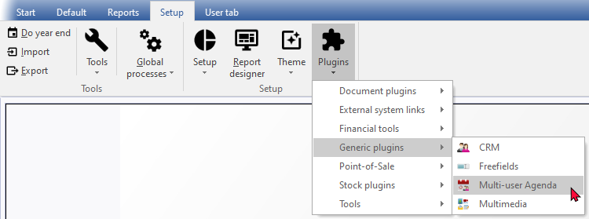
|
|
If you have not purchased and registered this Plugin, and launch this plugin from the Tools → Activate plugins menu Setup ribbon), following message is displayed: You will need to purchase this plugin to enable it. |

- On the "Register plugins" screen, select (tick) the "Enable multyuser agenda' option to activate it.
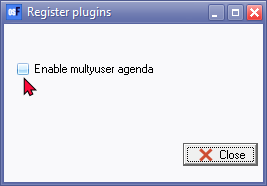
- Click on the Close button. At first only the osFinancials tab is added to the Calendar.
Adding users to the Multi-user Agenda plugin
To add users to the Multi-user Agenda plugin:
- On the Calendar, click on the add / edit button. The Resource Maintenance screen is displayed:
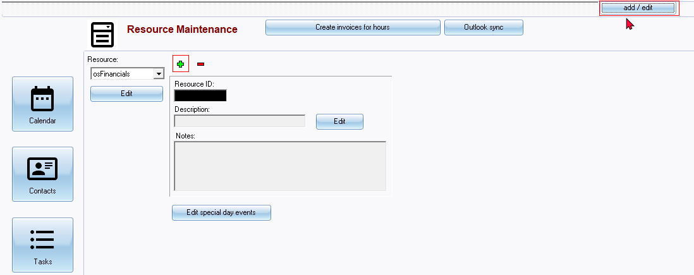
- Click on the button to add a user.
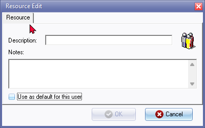
- Enter the name for the User. You may also add additional text for the user, if necessary.
- Select (tick) the "Use as default for this user" option to load the user when launching the calandar.
- Click on the OK button to save this resource.
- If you need to set colours or add / edit delete special day events for the user, click on the Edit special day events button.
- Click on the Agenda button.
- Click on the Tasks button or on the osFinancials tab (or any of the User tabs, if already created). This will add the new user's tab for each resource added..

- Click on the New User's tab to view his / her agenda. An example of the Multi-user Agenda (after a users have been added), is displayed as follows:
Change events to another user
By default, all existing events scheduled before adding users to the Multi-user agenda plugin, will be available under the main resource, i.e. osFinancials. You may need to select these and assign or change these to specific users.
You may assign an event / appointment from a user to another user.
To do this, select an event / appointment and right-click.
On the context menu, select the Change to option.
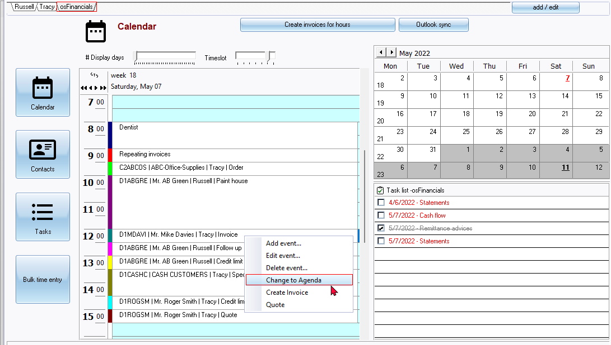
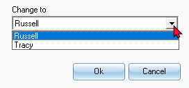
Select an user and click on OK.
The selected event will be removed from the existing user and added to the selected user.
|
|
Colour coding also makes it easier to identify the category of the event, when displayed in the Calendar. |
Editing General and Special dates
To edit General and Special dates:
- On the the Calendar, select a User on the tabs.
- Click on the Edit special days button to change the colors and to add, edit or delete user dates for the selected user. You may also change the colors and to add, edit or delete days applicable to all users on the General dates tab.
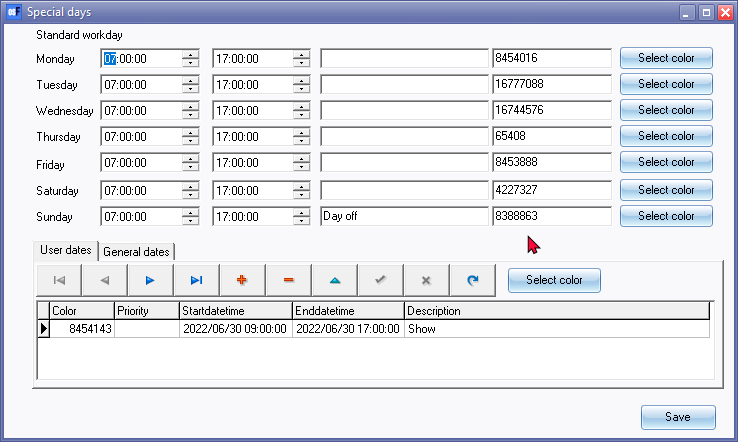
- To select the colours, click on the Select color button.
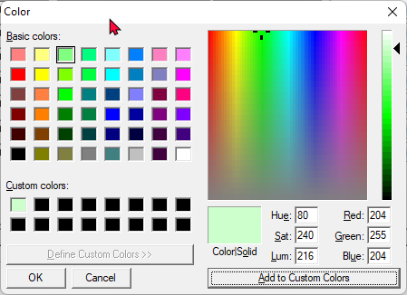
- Once finished, click on the Save button.
- Click on the Tasks or Agenda button. The resources will be changed for the selected user.
|
|
The standard colours will be displayed. To select different shades or customise your colours, click on the Define Custom Colors button. You may drag the slider up or down, etc. to select your own color. Once you have decided upon a color, click on the Add Custom Colors button and on the OK button. This will generate and insert the color code into the Special days screen. |
Delete a user
|
|
This operation cannot be undone. Make absolutely sure that this is the correct user, before deleting. Should you delete the incorrect user, you need to recreate the user that was erroneously deleted. |
To delete a user from the Multi-user Agenda
- Launch the Calendar, if not already displayed.
- Select the correct User on the tabs, if the correct user is not already selected.
- Click on the add / edit button. The Resource Maintenance screen will be displayed.
- Make absolutely sure that this is the correct user. If not, select a user from the Resource list or click on the correct User tab.
- Click on the 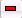 button to delete a user. The User will be removed from the list and the User tabs.
Bulk time entries
Users may create hours events for a selected debtor (customer / client). To do this, click on the Bulk time entry.
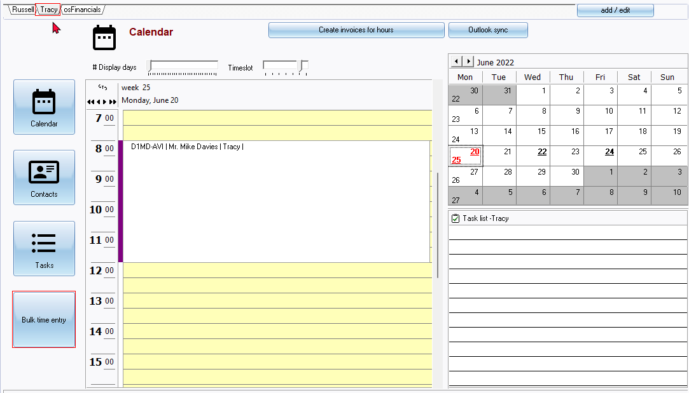
On the Bulk time entry screen, The User will be displayed.
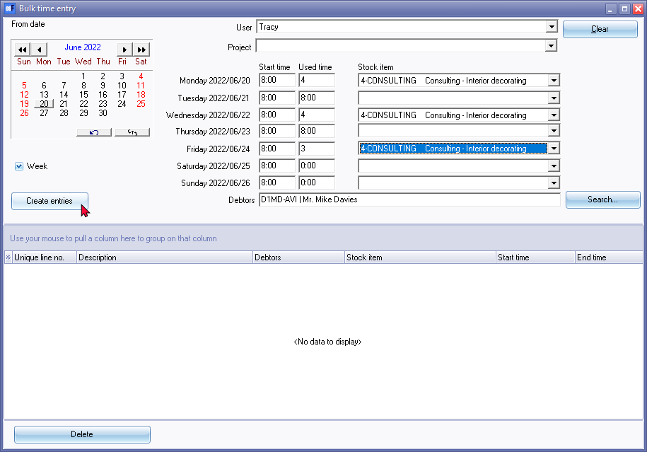
Select and enter the start dates and number of hours.
Select a stock item (usually sales no stock type)
Select the debtor (customer / client) account.
Click on the Create entries button. A confirmation message will be displayed.
"Entries created!"
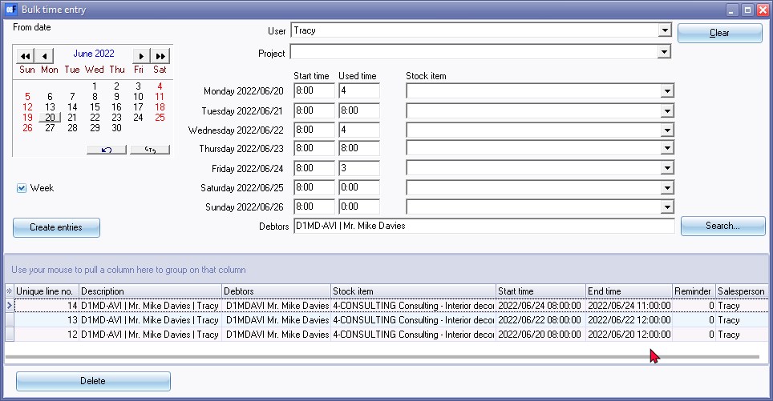
Once the entries are created, these entries will be listed in the calendar.
You may then edit the Hours event, if necessary. You need to click on the Create invoices for hours button on top of the Calendar to generate invoices.
These Bulk time entries will be listed on the Appointment tab of the selected debtor (customer / client) account.
Reports for the Calendar
The Calendar report allows you to print the categories of events (i.e. Appointments, Debtor appointments, Creditor appointments and Hours) scheduled in the Calendar (Planner).
To print Calendar - Hours report:
- On the Reports ribbon, select Reports → Calendar.

- Select the period on the Per period tab. You may click on the Per date(s) tab to select a specific date or a range of dates.
- Select the the following options:
- Agenda - Select to include the general events (e.g. meetings, appointments, etc.).
- Debtor appointment - Select to include the appointments for debtor (customer / client) accounts. All appointments are also listed in the Appointment tab of the Debtors (Default ribbon).
- Creditor appointment - Select to include the appointments for creditor (supplier / vendor) accounts. All appointments are also listed in the Appointment tab of the Creditors (Default ribbon).
- Hours - Select to include the appointments for the hours event category. The are scheduled appointments for which quotes are generated and confirmed to invoices.
- Click on the OK button.
An example of the "Calendar - Hours" (all events) report, is as follows:
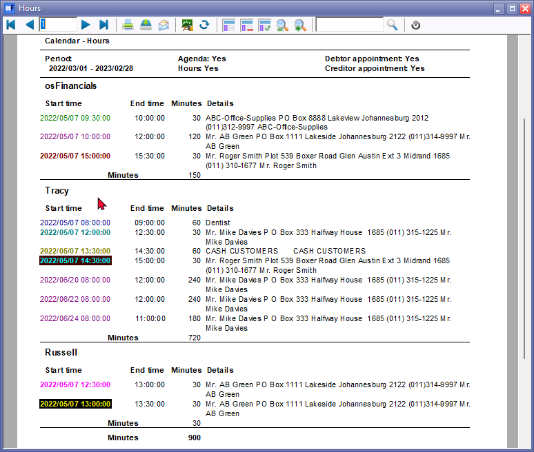
The colours for the events are as follows:
|
|
Repeating invoices are not included in this report. |
|
|
In addition to osFinancials resource, will be replaced when using the Multi-user Agenda plugin with the name of the Resource (User). This report will be printed for each user. The resource can also be linked to an user in the Others tab of the Setup → Access control menu. |
Settings for the Calendar
Set the Calendar as default
By default, the Welcome screen will be launched when opening a Set of Books. You may activate the Calendar to be displayed when opening a Set of Books.
When launching osFinancials and you open the Set of Books, the Welcome screen will be displayed. When opening the Set of Books again, the Calendar will automatically be displayed.
To set the calendar as the default option when opening the Set of Books:
- On the Setup ribbon, select Setup → System parameters.
- Select (tick) the “Show calendar” field.
- Click on the OK button.
Access control settings
To add users and settings for the Multi-user Agenda:
- On the Setup ribbon, select Access control.
- Add users, if necessary.
- Click on the Others tab.
- Link to calendar - The resource can also be linked to an user in the Others tab of the Setup → Access control menu.
- Edit calendar - Allow or block user to add evens, tasks, contacts, etc. to the calendar.
- Click on the OK button.